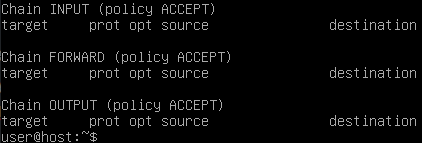

Greetings,
I’m performing some tests by using Whonix Gateway CLI + Debian 10.9 as workstation and some aspects of the whonix firewall in this OS custom scenario.
I guess the configuration, enable and disable of Whonix Firewall is directly related to the iptables rules.
When the Whonix Firewall is enabled (assuming no changes by the user) the iptables rules are the following:
{kind=link}
{kind=link}
In this situation, both of the machines work well and they connect also to the Internet.
During my tests, I noted that, if I disable the Whonix Firewall on the Gateway, as described here https://www.whonix.org/wiki/Dev/Firewall_Unload, and executing ./firewall-unload script, the iptables rules will correctly be:

and if I perform a curl ifconfig.me in the Whonix Gateway, it connects correctly, but on Debian, if I try to execute sudo apt-get update or curl ifconfig.me, I receive connection errors, the workstation is not connected to the network anymore. Why disabling the Whonix Firewall isolates the Debian workstation? Is there another component involved in this scenario that blocks the connections when the Whonix Firewall is disabled?
PS: executing sudo service whonix-firewall status:
{kind=link}
Regards